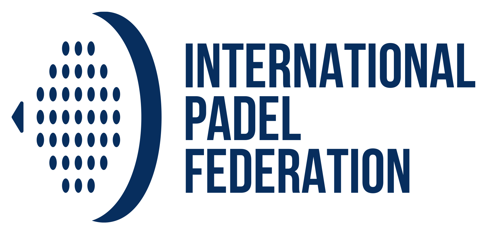

TORNEOS
Premier Padel

El circuito Premier Padel es la máxima competición profesional de este deporte a nivel global, operando bajo un sistema de eliminación directa que se divide en tres niveles principales: los Majors (que otorgan 2,000 puntos), los P1 (1,000 puntos) y los P2 (500-600 puntos), además de un Master Final exclusivo para los mejores del ranking al cierre de la temporada. Mientras que los Majors cuentan con cuadros más amplios de hasta 48 parejas, los torneos P1 y P2 son más compactos y selectivos, pero todos comparten el objetivo de unificar el ranking mundial de la FIP bajo una estructura profesionalizada con presencia en más de 16 países.
Cupra FIP Tour
El CUPRA FIP Tour actúa como el motor de crecimiento del pádel mundial, ofreciendo seis niveles de competición que van desde el FIP Platinum (300 puntos) hasta el FIP Promotion (15 puntos). Su función principal es permitir que los jugadores fuera de la élite inmediata sumen puntos para el ranking unificado y así puedan "ascender" a los torneos de Premier Padel. Es un circuito masivo y capilar, con torneos constantes en todo el mundo, que sirve como el puente necesario entre el pádel amateur/regional y el profesionalismo absoluto.
FIP Championship
Los FIP Championships representan la vertiente institucional y nacional del pádel, destacando el Mundial de Parejas que otorga 2,000 puntos al ranking (igual que un Major) y los Continentales que otorgan 1,000. Se ejecutan mediante una fase de grupos seguida de eliminación directa, y en su formato por equipos, exigen que las naciones ganen dos de tres partidos individuales para avanzar. Son eventos clave para los jugadores top, ya que les permiten sumar puntos masivos mientras representan a sus países en sedes globales.